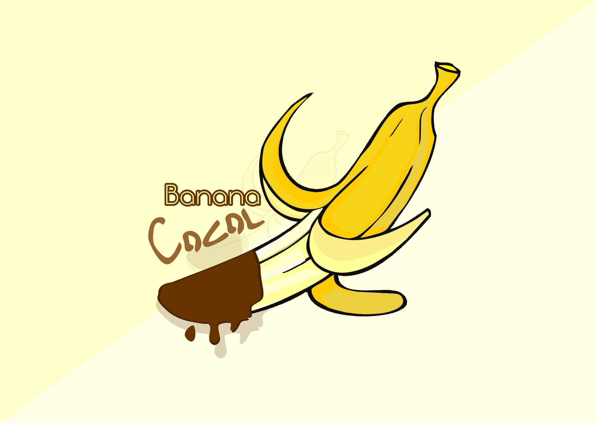

Profil Bacool!
Selamat datang di "Bacool!"
| No | Menu | Price | Description |
|---|---|---|---|
| 1 | Bacool! Coklat | Rp. 25.000 | Banana dengan nyocol Coklat. |
| 2 | Americano | Rp. 20.0000 | Minuman yang terdiri dari satu atau dua shot espresso yang dituangkan ke dalam cangkir yang sudah diisi dengan air panas. |
| 3 | Coffee Latte | Rp. 25.000 | Minuman kopi yang menawarkan perpaduan harmonis antara espresso yang kaya dengan kelembutan susu steamed. |
| 4 | Machiato | Rp. 25.000 | Minuman kopi yang menawarkan pengalaman rasa yang unik dengan perpaduan antara kekuatan espresso dan sedikit susu steamed dengan campuran machiato. |
| 5 | Macha Latte | Rp. 25.000 | Matcha Latte adalah minuman yang menggabungkan kelezatan teh matcha dengan kelembutan susu yang kaya, menciptakan pengalaman minum yang unik dan memuaskan. |
| 6 | Choco Latte | Rp. 25.000 | Cocho Latte adalah minuman kopi yang menggugah selera yang menggabungkan rasa klasik dari Espresso dengan sentuhan cokelat yang lembut. |
| 7 | Lemon Tea | Rp. 20.000 | Lemon Tea kami adalah minuman yang menyegarkan dan lezat yang terbuat dari campuran teh hitam berkualitas tinggi yang diseduh dengan air panas dan dicampur dengan perasan lemon segar. |
| 8 | Croissant | Rp. 20.000 | Croissant klasik kami adalah kombinasi sempurna antara kelembutan dan kegaringan. Dengan lapisan-lapisan lembut dan berlapis, croissant kami memancarkan aroma mentega yang menggoda begitu Anda menggigitnya. |
| 9 | Cheese Cake | Rp. 25.000 | Cheesecake klasik kami adalah paduan sempurna antara kelembutan dan kekayaan rasa. Basiskue graham yang renyah membentuk landasan untuk lapisan cheesecake yang lembut dan kental. |
| 10 | Nasi Goreng | Rp. 35.000 | Nasi Goreng Spesial kami adalah kombinasi yang sempurna antara nasi goreng yang gurih dan lezat dengan campuran bahan-bahan yang segar dan bumbu-bumbu tradisional yang khas. |
| 11 | Spaghetti | Rp. 30.000 | Spaghetti Bolognaise adalah hidangan klasik yang disajikan dengan saus daging sapi yang kaya rasa, dibumbui dengan tomat segar, bawang, dan rempah-rempah pilihan. |
Cara Pemesanan
Di "Konichiwa Coffee Shop," kami ingin membuat proses pemesanan Anda senyaman dan sesederhana mungkin. Berikut adalah deskripsi tentang cara memesan di coffee shop kami: Penjelajahan Menu: Saat Anda tiba di coffee shop kami, Anda akan disambut dengan menu yang beragam. Luangkan waktu sejenak untuk menjelajahi pilihan kopi spesial kami, minuman non-kopi, serta makanan pencuci mulut dan makanan ringan lainnya. Konsultasi dengan Barista: Jika Anda memiliki pertanyaan tentang menu atau ingin rekomendasi, jangan ragu untuk berkonsultasi dengan barista kami yang ramah dan berpengetahuan luas tentang kopi. Mereka akan dengan senang hati membantu Anda memilih minuman yang sesuai dengan selera Anda. Pemesanan di Meja atau Kasir: Setelah Anda memutuskan apa yang ingin Anda pesan, Anda dapat melakukan pemesanan di meja Anda dengan bantuan pelayan kami atau langsung ke kasir. Jika Anda memesan di kasir, Anda akan diberi nomor pesanan yang akan digunakan untuk mengidentifikasi pesanan Anda. Pembayaran: Setelah memesan, Anda akan diminta untuk melakukan pembayaran. Kami menerima pembayaran dengan uang tunai atau kartu kredit/debit, untuk memberikan kemudahan bagi para pelanggan. Penyajian Pesanan: Setelah pesanan Anda diproses, tim kami akan membuat minuman Anda dengan cermat dan menyajikannya dengan indah di meja Anda atau di area pengambilan. Kami juga memastikan bahwa pesanan Anda sesuai dengan keinginan Anda, baik dalam hal rasa maupun penampilan. Pelayanan Tambahan: Jika ada kebutuhan tambahan seperti tambahan gula atau susu, jangan ragu untuk memberi tahu barista kami. Kami berusaha untuk memberikan pelayanan yang memuaskan dan memastikan bahwa setiap pengunjung merasa dihargai. Dengan proses pemesanan yang mudah dan pelayanan yang ramah, kami berharap Anda dapat menikmati pengalaman bersantai di "The Brew Haven" tanpa adanya kesulitan. Ayo kunjungi kami dan nikmati segelas kopi yang segar dan makanan lezat lainnya!
Contact Person 0857-1448-3720.
Dokumentasi Konichiwa Coffee Shop
Konichiwa Coffee Shop bukan hanya sekedar tempat santai, melainkan tempat berkumbul bersama keluarga, teman, pasangan untuk berkumpul atau sebagai sarana kerja. Dari sejarah yang mendalam hingga proses kreatif yang penuh dedikasi, setiap aspek dari caffee shop ini mencerminkan hasrat yang mendalam akan cita rasa menu dan keindahan tempat bersantai. Jika Anda mencari tempat bersantai yang bagus, jangan ragu untuk berkunjung ke Konichiwa Coffe Shop.
Proses Kreatif: Keajaiban di Balik Layar
Setiap hidangan di Konichiwa Coffe ini merupakan hasil dari dedikasi dan keterampilan tim dapur yang berbakat. Dari seleksi bahan baku hingga presentasi akhir, setiap langkah dipenuhi dengan perhatian terhadap detail dan kecintaan akan seni kuliner.
- Seleksi Bahan Berkualitas: Tim dapur hanya menggunakan bahan-bahan berkualitas terbaik untuk menciptakan hidangan-hidangan mereka. Dengan memprioritaskan bahan segar dan bermutu tinggi, mereka menjamin keaslian dan kelezatan setiap hidangan.
- Teknik Memasak yang Mahir: Dapur restoran menjadi medan bagi keterampilan dan keahlian dalam memasak. Dengan penguasaan teknik-teknik tradisional dan inovatif, setiap hidangan makanan dan minuman dipersiapkan dengan sempurna untuk mencapai cita rasa yang diinginkan.
- Presentasi yang Menawan: Keindahan visual juga menjadi perhatian utama dalam menyajikan hidangan. Dengan sentuhan kreatif dan estetika yang halus, setiap hidangan di Konichiwa Coffe tidak hanya memikat lidah, tetapi juga mata.
Pengalaman Pengguna yang Memuaskan
Ketika Anda memasuki Coffe Shop Konichiwa, Anda akan disambut oleh suasana yang hangat dan ramah. Desain interior yang elegan dan nyaman menciptakan lingkungan yang mengundang untuk bersantap bersama teman dan keluarga. Tim pelayanan yang profesional dan ramah siap membantu Anda dengan senyum yang tulus, menjadikan kunjungan Anda sebagai pengalaman yang menyenangkan dari awal hingga akhir.